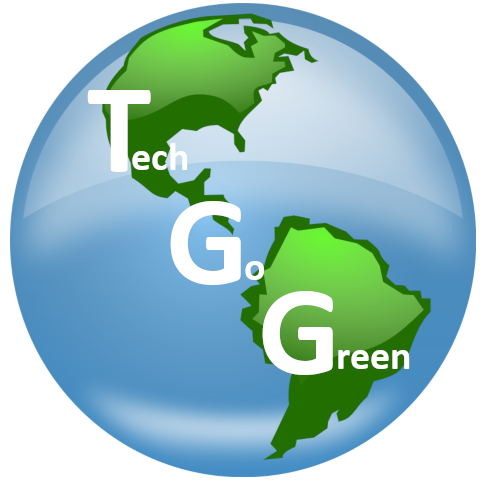

Pitch Presentation
In what ways can we slow down or prevent tech waste?
Electronic Waste or e-waste is one of the fastest growing segments of our nations waste stream.
It encompasses all broken, unusable, or outdated/obsolete electronic devices, components, and materials.
As a result of the negative impacts of e-waste, Tech Go Green, will find out how society can slow down or prevent the production of tech waste
